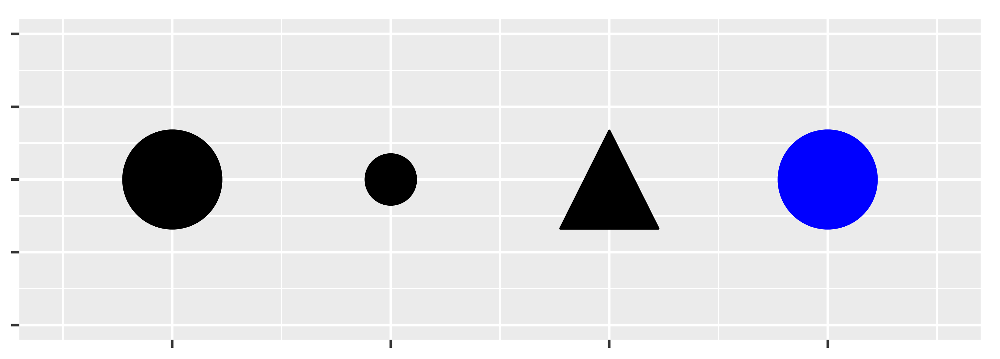

Ch. 2 Data visualisation with plotnine
library(reticulate)
use_virtualenv("./pyenv", required = TRUE)
knitr::opts_chunk$set(fig.show = "hold",
fig.align = "center",
out.extra = "class=\"md:w-3/4 lg:w-2/3\"",
dpi = 300,
comment = "")from plotnine import *
from plotnine.data import *
import numpy as np
import pandas as pdimport warnings
pd.set_option("display.max_rows", 10)
from matplotlib import rcParams
rcParams.update({"figure.max_open_warning": 0,
"savefig.bbox": "tight"})
theme_set(theme_gray(base_size=12))The mpg dataset:
mpg manufacturer model displ year cyl trans drv cty hwy fl class
0 audi a4 1.8 1999 4 auto(l5) f 18 29 p compact
1 audi a4 1.8 1999 4 manual(m5) f 21 29 p compact
2 audi a4 2.0 2008 4 manual(m6) f 20 31 p compact
3 audi a4 2.0 2008 4 auto(av) f 21 30 p compact
4 audi a4 2.8 1999 6 auto(l5) f 16 26 p compact
.. ... ... ... ... ... ... .. ... ... .. ...
229 volkswagen passat 2.0 2008 4 auto(s6) f 19 28 p midsize
230 volkswagen passat 2.0 2008 4 manual(m6) f 21 29 p midsize
231 volkswagen passat 2.8 1999 6 auto(l5) f 16 26 p midsize
232 volkswagen passat 2.8 1999 6 manual(m5) f 18 26 p midsize
233 volkswagen passat 3.6 2008 6 auto(s6) f 17 26 p midsize
[234 rows x 11 columns]Plotting couple of variables:
ggplot(data=mpg) +\
geom_point(mapping=aes(x="displ", y="hwy"))
With some dots in red:
ggplot(data=mpg, mapping=aes(x="displ", y="hwy")) +\
geom_point() +\
geom_point(data=mpg.query("displ > 5 & hwy > 20"), colour="red", size=2.2)
Markers:
def no_labels(x) :
return [""] * len(x)
df = pd.DataFrame({"x": [1, 2, 3, 4],
"y": [1, 1, 1, 1],
"size": [20, 10, 20, 20],
"shape": ["o", "o", "^", "o"],
"color": ["black", "black", "black", "blue"]})
ggplot(df, aes("x", "y", size="size", shape="shape", color="color")) +\
geom_point() +\
scale_x_continuous(limits=(0.5, 4.5), labels=no_labels) +\
scale_y_continuous(limits=(0.9, 1.1), labels=no_labels) +\
scale_size_identity() +\
scale_shape_identity() +\
scale_color_identity() +\
labs(x=None, y=None) +\
theme(aspect_ratio=1/3)
2.1 Introduction
“The simple graph has brought more information to the data analyst’s mind than any other device.” — John Tukey
This tutorial will teach you how to visualise your data using plotnine. Python has many packages for making graphs, but plotnine is one of the most elegant and most versatile. plotnine implements the grammar of graphics, a coherent system for describing and building graphs. With plotnine, you can do more faster by learning one system and applying it in many places.
If you’d like to learn more about the theoretical underpinnings of plotnine before you start, I’d recommend reading The Layered Grammar of Graphics.
2.1.1 Prerequisites
This tutorial focusses on plotnine. We’ll also use a little numpy and pandas for data manipulation. To access the datasets, help pages, and functions that we will use in this tutorial, import4 the necessary packages by running this code:
If you run this code and get the error message ModuleNotFoundError: No module named 'plotnine', you’ll need to first install it^, then run the code once again.
! pip install plotnine[all]You only need to install a package once, but you need to import it every time you run your script or (re)start the kernel.
2.2 First steps
Let’s use our first graph to answer a question: Do cars with big engines use more fuel than cars with small engines? You probably already have an answer, but try to make your answer precise. What does the relationship between engine size and fuel efficiency look like? Is it positive? Negative? Linear? Nonlinear?
2.2.1 The mpg DataFrame
You can test your answer with the mpg DataFrame found in plotnine.data. A DataFrame is a rectangular collection of variables (in the columns) and observations (in the rows). mpg contains observations collected by the US Environmental Protection Agency on 38 models of car.
mpg manufacturer model displ year cyl trans drv cty hwy fl class
0 audi a4 1.8 1999 4 auto(l5) f 18 29 p compact
1 audi a4 1.8 1999 4 manual(m5) f 21 29 p compact
2 audi a4 2.0 2008 4 manual(m6) f 20 31 p compact
3 audi a4 2.0 2008 4 auto(av) f 21 30 p compact
4 audi a4 2.8 1999 6 auto(l5) f 16 26 p compact
.. ... ... ... ... ... ... .. ... ... .. ...
229 volkswagen passat 2.0 2008 4 auto(s6) f 19 28 p midsize
230 volkswagen passat 2.0 2008 4 manual(m6) f 21 29 p midsize
231 volkswagen passat 2.8 1999 6 auto(l5) f 16 26 p midsize
232 volkswagen passat 2.8 1999 6 manual(m5) f 18 26 p midsize
233 volkswagen passat 3.6 2008 6 auto(s6) f 17 26 p midsize
[234 rows x 11 columns]Among the variables in mpg are:
displ, a car’s engine size, in litres.hwy, a car’s fuel efficiency on the highway, in miles per gallon (mpg). A car with a low fuel efficiency consumes more fuel than a car with a high fuel efficiency when they travel the same distance.
To learn more about mpg, open its help page by running ?mpg.
2.2.2 Creating a ggplot
To plot mpg, run this code5 to put displ on the x-axis and hwy on the y-axis:
ggplot(data=mpg) +\
geom_point(mapping=aes(x="displ", y="hwy"))
The plot shows a negative relationship between engine size (displ) and fuel efficiency (hwy). In other words, cars with big engines use more fuel. Does this confirm or refute your hypothesis about fuel efficiency and engine size?
With plotnine, you begin a plot with the function ggplot(). ggplot() creates a coordinate system that you can add layers to. The first argument of ggplot() is the dataset to use in the graph. So ggplot(data=mpg) creates an empty graph, but it’s not very interesting so I’m not going to show it here.
You complete your graph by adding one or more layers to ggplot(). The function geom_point() adds a layer of points to your plot, which creates a scatterplot. plotnine comes with many geom functions that each add a different type of layer to a plot. You’ll learn a whole bunch of them throughout this tutorial.
Each geom function in plotnine takes a mapping argument. This defines how variables in your dataset are mapped to visual properties. The mapping argument is always paired with aes(), and the x and y arguments of aes() specify which variables to map to the x and y axes. plotnine looks for the mapped variables in the data argument, in this case, mpg.
2.2.3 A graphing template
Let’s turn this code into a reusable template for making graphs with plotnine. To make a graph, replace the bracketed sections in the code below with a dataset, a geom function, or a collection of mappings.
ggplot(data=<DATA>) +\
<GEOM_FUNCTION>(mapping=aes(<MAPPINGS>))The rest of this tutorial will show you how to complete and extend this template to make different types of graphs. We will begin with the <MAPPINGS> component.
2.2.4 Exercises
Run
ggplot(data=mpg). What do you see?How many rows are in
mpg? How many columns?What does the
drvvariable describe? Read the help for?mpgto find out.Make a scatterplot of
hwyvscyl.What happens if you make a scatterplot of
classvsdrv? Why is the plot not useful?
While it’s generally considered to be bad practice to import everything into the global namespace, I think it’s fine to do this in an ad-hoc environment such as a notebook as it makes using the many functions plotnine provides more convenient. An additional advantage is that the resulting code more closely resembles the original ggplot2 code. Alternatively, it’s quite common to
import plotnine as p9and prefix every function withp9.↩︎If you dislike the continuation character
\then an alternative syntax is to wrap the entire expression in parentheses so that it’s not needed.↩︎